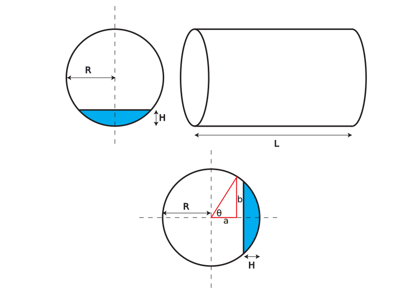

Liquid volume in a horizontal cylindrical tank
Consider a horizontal, cylindrical tank, partially filled with liquid. Measuring the height of liquid in the tank is relatively straightforward, you could use a dipstick or another more sophisticated alternative. However, for most purposes, the volume of liquid remaining in the tank is more interesting. In this article, I'll show how to calculate the liquid volume remaining in the tank, given the liquid height and present a dynamic, interactive plot which describes the non-linear relationship between height and volume in this system.
The diagram and cross-section above show a horizontal tank of length $L$ and inner radius $R$ filled to a height $H$. Assume that $H$ can be measured accurately. The bottom panel shows the tank cross-section rotated 90° counter-clockwise. Horizontal and vertical distances from the centre of the cross-section ($a$ and $b$ respectively) can be written as functions of the angle $\theta$:
$\sin \theta=\frac{b}{R}\\ \cos \theta=\frac{a}{R}$
Eliminating $\theta$ we can write down an expression for $b$ in terms of $a$:
$b=R\sin \arccos \frac{a}{R}$
The area between the upper curve in the rotated cross-section (excluding the area coloured blue) and the horizontal dashed line corresponds to half of the unfilled cross-sectional area of the tank. This area can be calculated by integrating $b$ from $-R$ to $R-H$ allowing us to write an expression for the total unfilled cross-sectional area (the white area in the cross-sections above):
$A_{unfilled}=2\int_{-R}^{R-H}R\sin \arccos \frac{a}{R} \mathrm{d}a$
The integral above does have an analytical solution. Subtracting $A_{unfilled}$ from the total cross-sectional area to give the filled area, and multiplying by the tank length to give the filled volume, we can write down the following expression for liquid volume in terms of $H$:
$V_{filled}(H)=\frac{\pi R^2L}{2}-RL\left( (R-H)\sqrt{\frac{H(2R-H)}{R^2}}+R\arcsin \left(1-\frac{H}{R}\right) \right)$
The function above can be used to calculate $V_{filled}$ given the variable $H$ and fixed parameters describing the tank dimensions: $R$ and $L$.
The interactive plot above shows the functional relationship between volume and liquid height for a given set of tank dimensions. Hover the mouse above the x-axis to see the liquid volume corresponding to a given depth. If you adjust the tank dimensions specified in the boxes below the plot, the curve and units on the axes will update dynamically to reflect the change. Finally the box labelled 'Plot fraction' allows you to zoom in on the bottom half of the curve to allow more precise readings.
The plot was created using the D3.js javascript library. The diagram is an SVG scaleable graphics image. Equations are written in LaTeX and rendered using the MathJax javascript library.